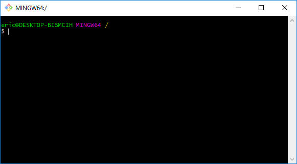
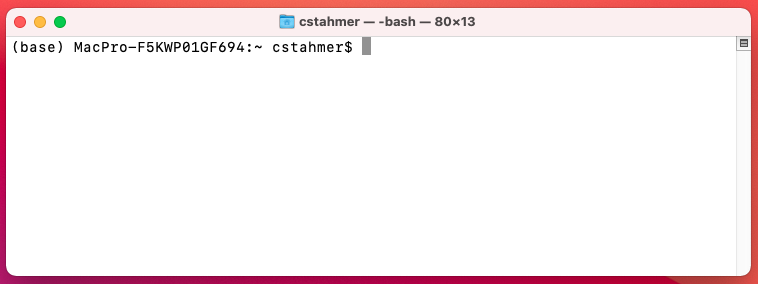
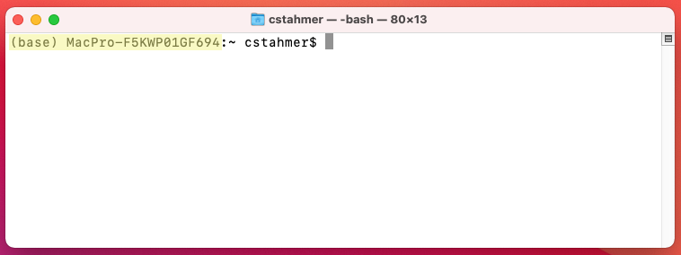
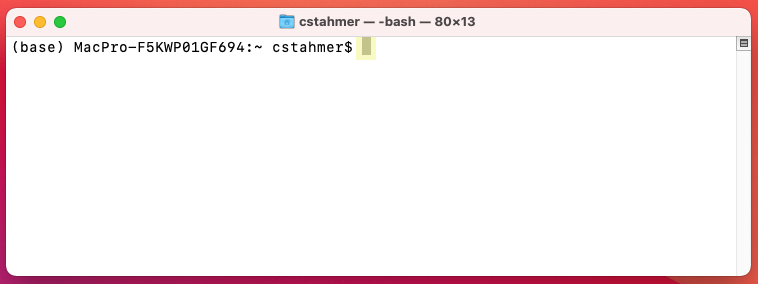
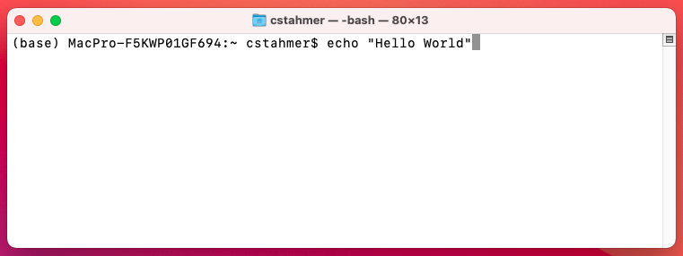

1 Working with the Command Line
Most users interact with their computer through a Graphical User Interface (GUI) that allows them to use a mouse, keyboard, and graphical elements on screen (such as file menus, pictures of folders and files, etc.) to perform their work. Users tend to conflate their Operating System and their GUI because computer hardware and software manufacturers tightly pack these two concerns as a convenience to users. But the Windows 10 or Mac Big Sur operating system that makes your computer work and the Windows 10 or Mac Big Sur GUI that you interact with are in fact completely different and separable software packages and it is possible to use different methods/software to interact with your computer than the stock, tightly coupled GUI that launches automatically when you turn on your computer.
Because computer manufacturers like Windows and Mac devote so many resources to the development of their system GUIs, there are few viable (at present, none, commercially available) competing GUIs for these platforms. This is not the case in the Linux world, however, where users have several system GUI packages from which to choose and can seamlessly switch between them as desired. Despite the lack of competition/choice on the GUI front when it comes to interacting with your computer, there are other, non-graphical ways of communicating directly with your operating system that exist for all operating systems. We call these “command line” interfaces. The command line offers a text-only, non graphical means of interacting with your computer. In the early days of computing, all user interaction with the computer happened at the command line. In the current days of graphical user interfaces, using the command line requires you to launch a special program that provides command line access.
Mac users will use an application called “Terminal” which ships by default with the Mac operating system. To launch the Terminal application, go to:
Applications -> Utilities -> Terminal
When you launch the application, you will see something like this:

Windows users will use an application called Git Bash. Instructions for installing Git Bash are available here. Please note that you are only required to complete a single section of these instructions (“Git on Windows”); no other sections are relevant for this particular workshop and you can disregard them.
To launch Git Bash, go to:
Click on the Windows Start Menu and search for “Git Bash”
Alternatively,
Click on the Windows Start Menu, select Programs, and browse to Git Bash
When you launch the application, you will see something like this:

1.1 Interacting with the command line
While it can look intimidating to those raised on the GUI, working with the command line is actually quite simple. Instead of pointing and clicking on things to make them happen, you type written commands.
The figure below shows a new, empty command line interface in the Mac Terminal application

The command line prompt contains a lot of valuable information. The beginning of the line, “(base) MacPro-F5KWP01GF694” tells us exactly which computer we are communicating with. This may seem redundant, but it is actually possible to interact with computers other than the one you are typing on by connecting to them via the command line over the network.

The bit of information after the colon, in this example the “~” character tells us where in the computer’s filesystem we are. We’ll learn more about this later, for now you need to undersand that the “~” character means you are in your home directory.

The next piece of information we are given is the username under which we are logged into the computer, in this case, the local username “cstahmer”.

After the username, we see the “$” character. This is known as the Command Prompt. It is an indicator that the command line application is waiting for you to enter something. The Command Prompt character is used througout these materials when giving command examples. When working through materials, DO NOT ENTER the Command Prompt. It will already be there telling you that the computer is ready to receive your command.

Depending on your system and/or command line interface, you may or may not also see a solid or flashing box that appears after the Command Prompt. This is a Cursor Position Indicator, which tells you where the current cursor is in the terminal. This is useful if you need to go gack and correct an error. Generally speaking, you can’t click a mouse in a terminal app to edit text. You need to use your computer’s right and left arrows to move the cursor to the correct location and then make your edit.

As noted earlier, we interact with the command line by typing commands. The figure below shows an example of a simple command, “echo” being entered into the command line.

The “echo” command prints back to screen any text that you supply to the command It literally echoes your text. To execute, this or any command, you simply hit the “return” or “enter” key on your keyboard. You’ll see that when you execute a command line command the sytem performs the indicated operation, prints any output from the operation to screen and then delivers a new command line prompt.

Note that depending on your particular system and/or command line interface, things might look slightly different on your computer. However, the basic presentation and function as described above will be the same.
1.2 Common Command Line Commands
During our hands-on workshop session we will practice using the following command line commands. Be prepared to have this page ready as a reference during class to make things easier.
| Command Name | Function | |
|---|---|---|
| ls | List | Lists all files in the current directory. |
| ls -l | List with Long flag | Lists additional information about each file. |
| ls -a | List with All flag | Lists all files, including hidden files. |
| pwd | Print Working Directory | Prints the current working directory. |
| mkdir | Make Directory | Creates a new file directory. |
| cd | Change Directory | Navigates to another directory on the file system. |
| mv | Move | Moves files. |
| cp | Copy | Copies files. |
| rm | Remove/delete | Deletes files. |
For a more complete list of Unix Commands, see the Unix Cheat Sheet.